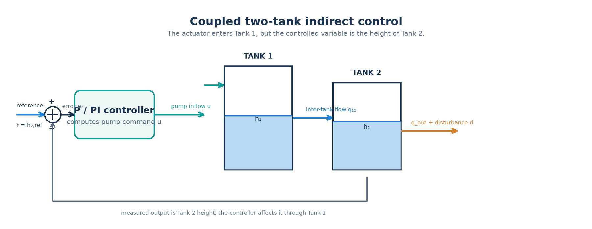
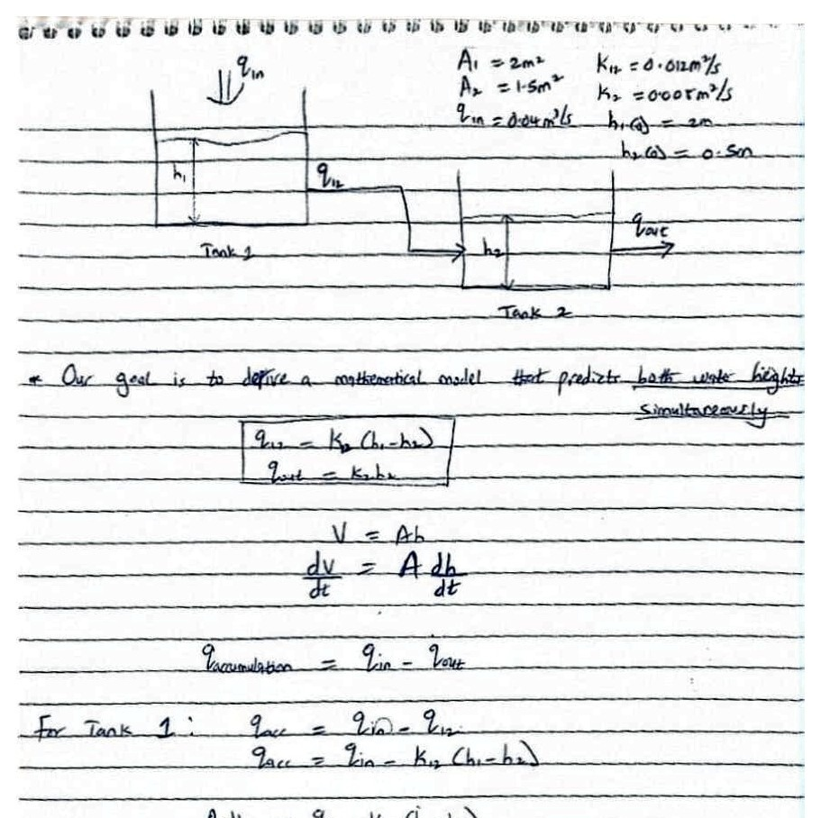
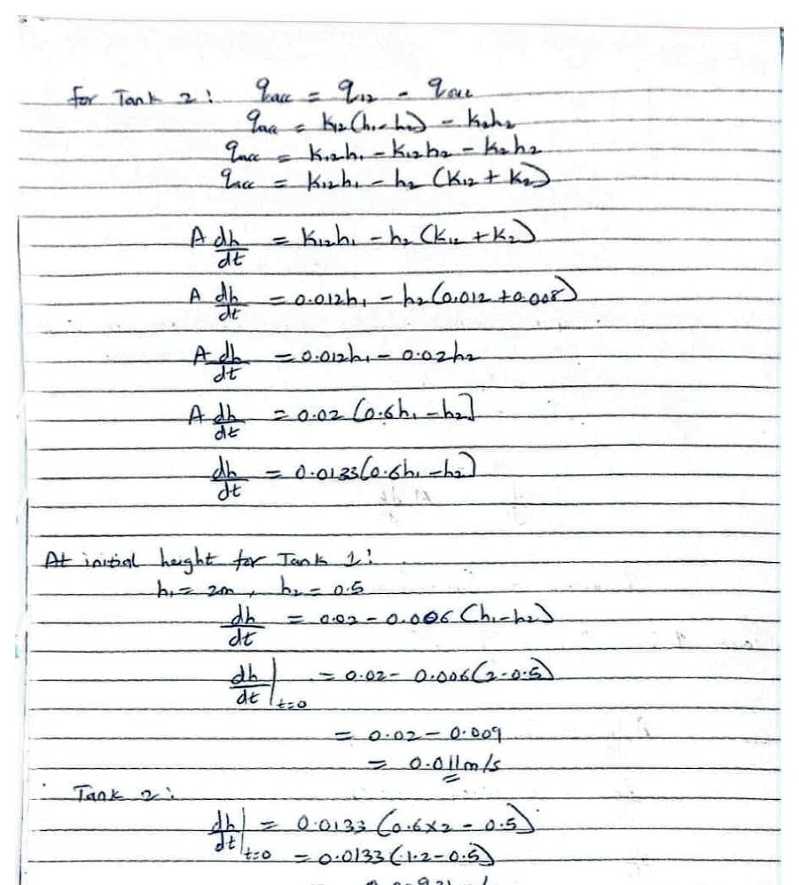
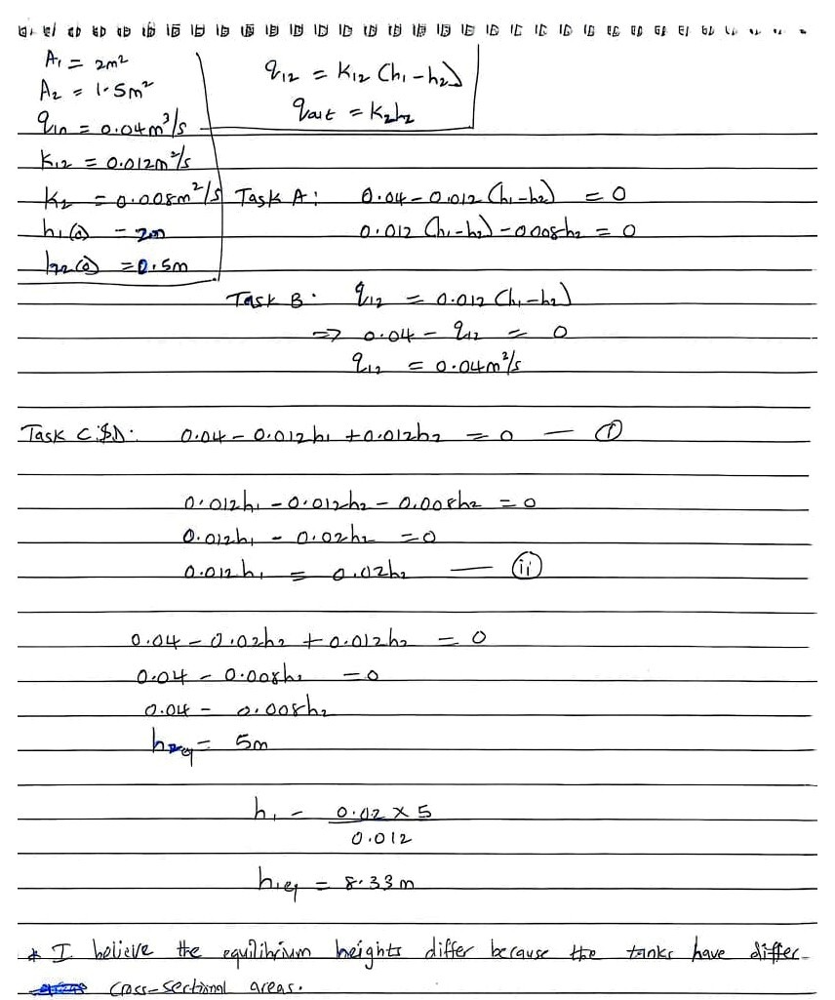
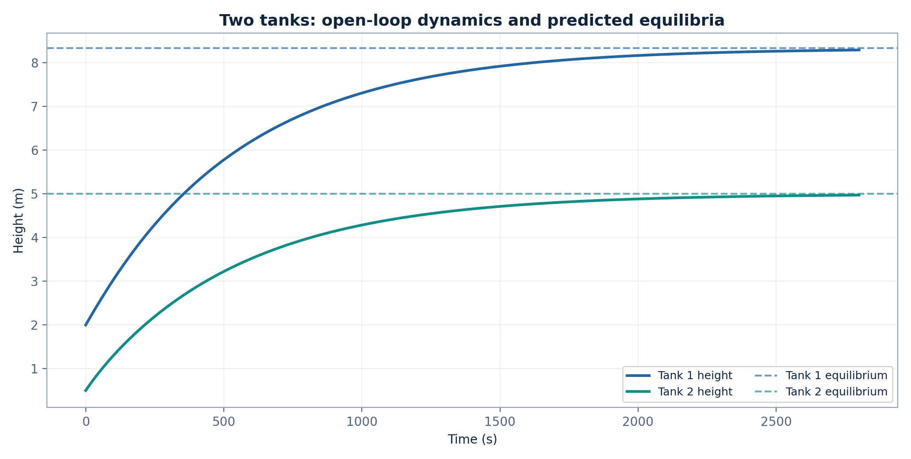
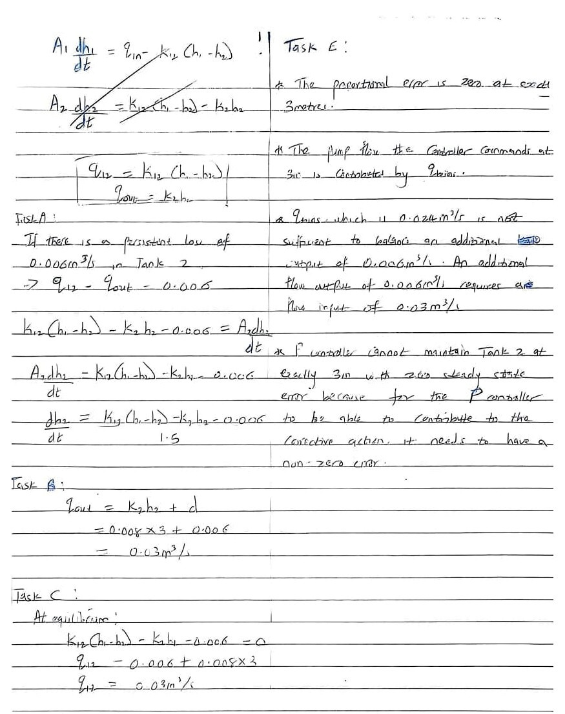
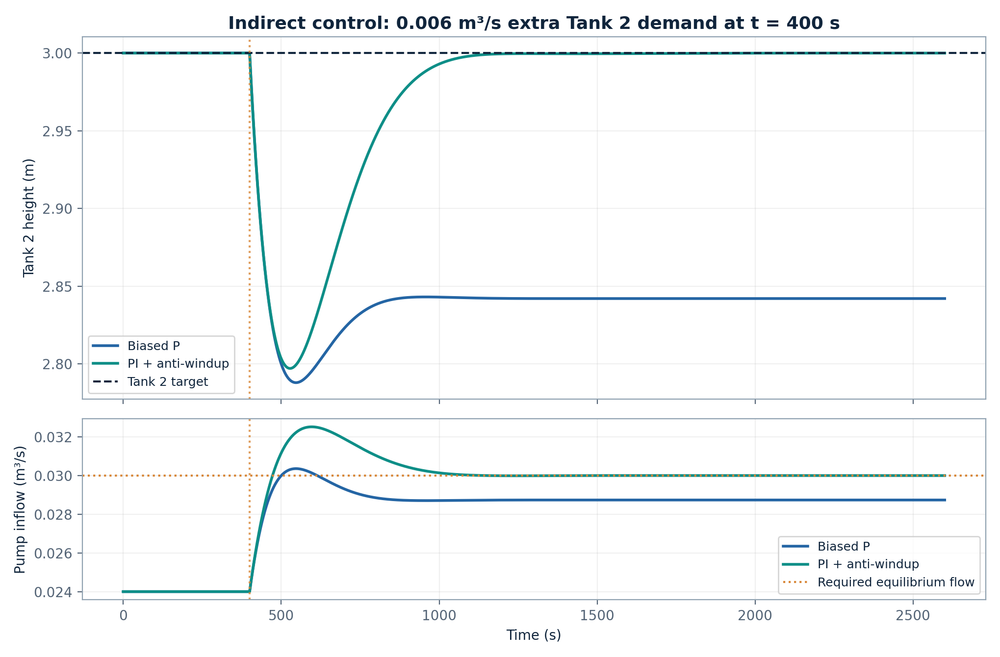
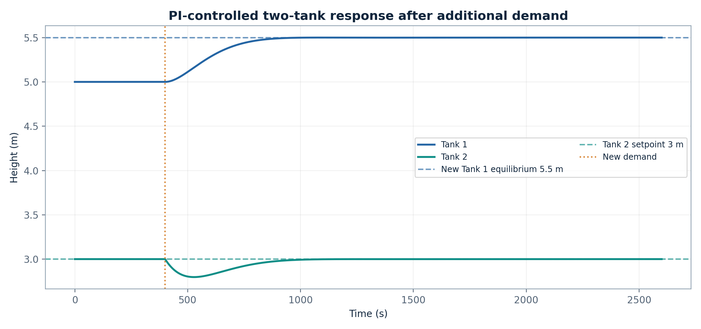
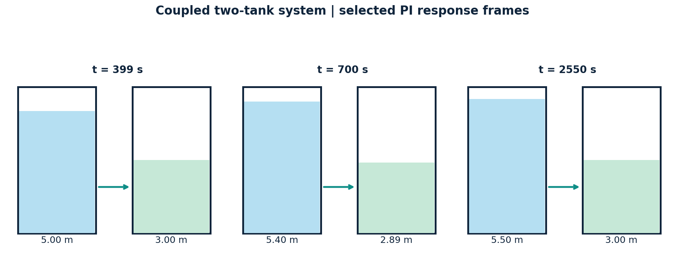

03 · Coupled two tanks / P and PI / Engineering report
Coupled two-tank control: one actuator, two interacting levels
The pump fills Tank 1 while feedback measures Tank 2. Every control action reaches the controlled level through the inter-tank flow.
Open the interactive companion →
1. The engineering question
How can one inlet pump regulate the level in a downstream tank when the actuator does not feed that tank directly? The answer begins with two conservation laws and one coupling flow.
2. Coupled physical model
The report model uses A₁ = 2 m², A₂ = 1.5 m², k₁₂ = 0.012 m²/s, and k₂ = 0.008 m²/s. The one-way linear transfer and Tank 2 outlet are

For the open-loop initial condition h₁(0) = 2 m, h₂(0) = 0.5 m, and u = 0.040 m³/s, q₁₂ = 0.018 m³/s and qout = 0.004 m³/s. Therefore ḣ₁(0) = 0.011 m/s and ḣ₂(0) = 0.009333… m/s.

3. Open-loop equilibrium
At equilibrium, every stored volume is constant, so the common steady flow is qin = q₁₂ = qout = 0.040 m³/s.


4. Control Tank 2 through Tank 1
For a target h₂ = 3 m with no extra demand, the nominal outlet is 0.008 × 3 = 0.024 m³/s. This is the natural controller bias. The matching upstream equilibrium is h₁ = 3 + 0.024/0.012 = 5 m.
5. Add a downstream demand
A constant demand d = 0.006 m³/s is withdrawn from Tank 2 after 400 s. It enters only the second conservation equation.

The report comparison uses Kp = 0.03 m²/s, Ki = 0.0001 m/s², pump limits of 0–0.10 m³/s, and the nominal bias of 0.024 m³/s. A P-only controller must retain an error to request the extra flow:
For PI at the desired equilibrium, the integral term supplies 0.006 m³/s, so z = 0.006/0.0001 = 60 m·s. The current error can then return to zero.
6. P-versus-PI demand response
Both controlled runs start at the nominal equilibrium (h₁, h₂) = (5, 3) m. Demand starts at 400 s and Forward Euler uses Δt = 0.2 s.



| Near 2,600 s | P controller | PI controller |
|---|---|---|
| Tank 2 height | 2.8421 m | 3.0000 m (approx.) |
| Pump flow | 0.02874 m³/s | 0.03000 m³/s (approx.) |
| Tank 1 height | 5.23684 m | 5.5000 m (approx.) |
| Integral memory z | Not used | 60 m·s (approx.) |
7. System-level conservation check
Adding the two tank balances cancels q₁₂. The internal transfer can redistribute volume but cannot create or destroy it.
8. Verification boundary and limitations
- The equilibrium results are analytic; the plotted figures use the stated illustrative parameters.
- The link law is a one-way linear approximation. A real hydraulic link may be nonlinear and may reverse direction.
- PI removes a feasible constant offset, but cannot overcome insufficient pump capacity.
- Real systems also involve sensor noise, delays, valve dynamics, overflow limits, and actuator constraints.
PYTHONPATH=projects/02-coupled-two-tank/src python -m two_tank.simulation
PYTHONPATH=projects/02-coupled-two-tank/src \
python -m unittest discover -s projects/02-coupled-two-tank/tests -v